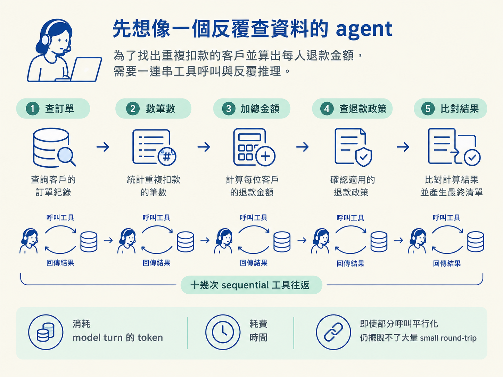
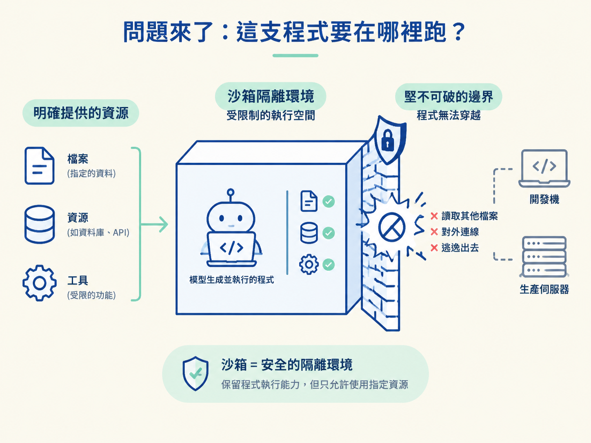

客服 agent 接到「找出重複扣款的客戶，算出每個人該退多少錢」的需求。它得先查訂單、數筆數、加總金額、查退款政策，最後再比對結果。
如果 agent 每完成一小步就呼叫一次工具，再等待結果、重新推理下一步，整段流程可能產生十幾次 sequential 工具往返。每次往返都會消耗一個 model turn 的 token 與時間。即使把部分呼叫平行化，仍然擺脫不了大量 small round-trip。

這一課會讓你能說明三件事：什麼是 code mode、為什麼 agent 產生的程式不能直接在開發機或生產伺服器上執行，以及沙箱為什麼必須「逃不出去」。
更有效的做法，是讓模型直接寫一支程式，把多個工具串起來，執行完整流程，最後只回傳結果。原本的「呼叫、等待、推理、再呼叫」迴圈，就被收進一段程式裡。
code mode = 讓 LLM 寫一支程式來串工具，用「一個回合」取代「多次工具往返」，最後只回傳結果。
英文稱為 code mode。這個詞最早由 Claude 使用，業界也有其他等價說法，例如 Small-Agents，以及 HuggingFace 的 CodeActs。
它的重點不是讓模型突然變得更聰明，而是換一種工作方式：把複雜、跨多個步驟的計算交給程式處理。程式執行是確定性的（deterministic），同樣的輸入會按照相同的邏輯完成計算。
模型通常很擅長寫程式，卻不擅長在心裡精確計算。像二次方程式求根，讓模型反覆呼叫計算器函式、一步步逼近，容易在中途出錯；讓它寫一支 Python 腳本，再交給程式一次算完，反而更可靠。code mode 正好把「模型擅長寫程式」與「程式擅長精確計算」接在一起。
現在風險也變得很直接：這支程式是模型產生的嗎？是。那你能直接信任它嗎？不能。
Coding agent 可能想執行 Bash，分析 agent 可能想執行 SQL 或進行計算。模型產生的程式碼可能寫錯，也可能讀取檔案，甚至連到不該連線的地方。因此，絕不能讓它直接跑在你的開發機或生產伺服器上。
把 agent 直接放進生產伺服器，就像把陌生人請進機房。它在筆電上出錯或許只是一次實驗；它在生產環境上出錯，可能影響真正的資料與服務。
正確做法是保留 agent「生成並執行程式碼」的能力，但把執行位置換成沙箱（sandbox）。沙箱會提供一個受限制的環境，讓程式只能使用明確提供給它的資源。

沙箱必須「逃不出去」。它是一道邊界，模型寫的程式只能碰沙箱裡有給它的東西。
市面上有許多沙箱方案，例如託管的隔離環境、獨立 process，或專用 runtime。不過，這門課希望你能快速看懂核心機制，因此會使用 Node 內建的 node:vm，在離線且最小的 context 裡執行程式。
這裡要先記住一個重要限制：vm 不是真正的安全邊界。它過去曾出現可被逃逸的漏洞。用它來示範「程式應該被限制在哪裡」很合適；但若要部署到生產環境，應改用託管的沙箱產品或獨立 process。
所以，本課程會清楚區分兩件事：課堂上用 vm 學會沙箱的概念；生產環境則必須採用真正的隔離方案。
接下來會把這個概念放進 harness，完成一個 run_code 工具。它會接收 agent 產生的程式，在沙箱裡執行，再把結果回傳給 agent。
流程分成三步：第二步實作沙箱本體 runInSandbox；第三步把它接成 run_code 工具；第四步用一個真的算出退款金額的 demo 驗證整條流程，並再次確認：vm 只是課堂示範工具，不是生產環境的安全邊界。